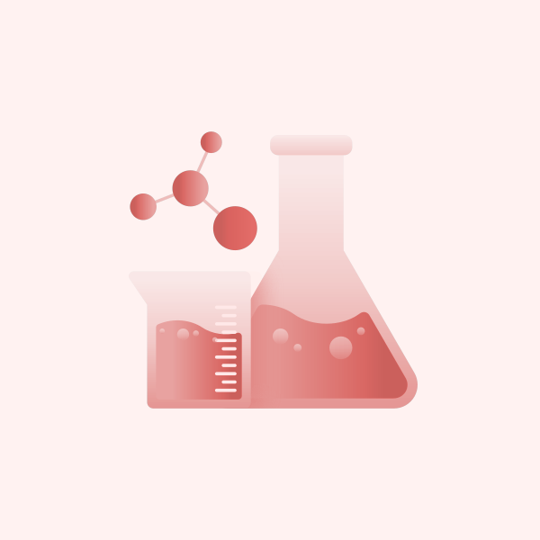
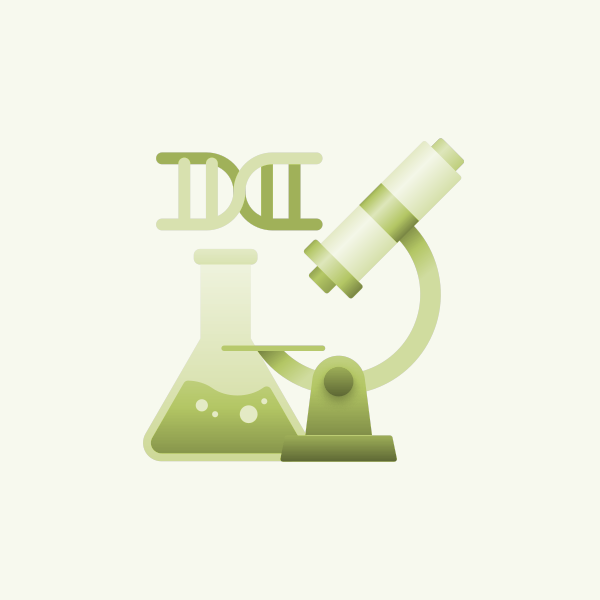
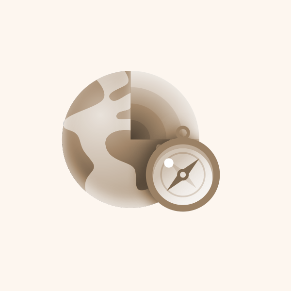
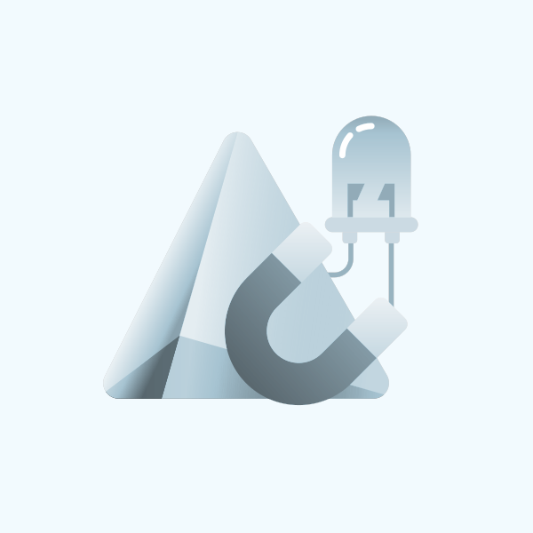

FlipLearn New
Upload any PDF chapter, flip through pages, tap sentences for instant explanations & memory tips.
Q-Bank New
Pick chapters and revise with interactive flashcards from your course material.
Learning Journey

Chemistry
By Avinash Maruti Kadrolkar
Electrolysis
Yet To Start
Mole concept and Stoichiometry
Recently Completed
Periodic Table-Periodic Properties And Variations Of Properties
Recently Completed

Biology
By Rakhi Joshi
Structure of Chromosomes, Cell Cycle and Cell Division
In Progress
Cell:The Structural And Functional Unit Of Life
Yet To Start
Chemical Co-ordination in Plants
Recently Completed

Geography
By Chandrima Roy
Natural vegetation
In Progress
Topography
Yet To Start
Soil resources
Recently Completed
Podcasts
New
All Subjects
Science
4. Chemical reactions-displacement reactions, redox reaction
Chemical reactions and equations
0:00 / 13:29

Science
3. Chemical reactions-combination reactions
Chemical reactions and equations
0:00 / 10:55
Science
2. Balancing chemical equations
Chemical reactions and equations
0:00 / 12:04
Tasks
All Subjects
All Tasks (70)
Enrichment Worksheet (70)
Quiz
Projects
All
Pending
Overdue
Submitted
Evaluated
Mole concept and Stoichiometry
Worksheet
Mole concept and Stoichiometry
Worksheet
Chemical Co-ordination in Plants
Worksheet
The Excretory System
Worksheet
Load More ...
Chapter Flipbook
Tap any sentence for an explanation
Chapter 3: Force and Pressure
A force is a push or pull acting upon an object as a result of its interaction with another object. Forces can make objects start moving, stop moving, speed up, slow down, or change direction.
Force is measured in newtons (N). One newton is the force needed to accelerate a one-kilogram mass by one metre per second squared.
Pressure is defined as the force acting per unit area. The same force applied over a smaller area produces a greater pressure, which is why sharp knives cut more easily than blunt ones.
Liquids and gases exert pressure on the walls of their containers. Atmospheric pressure is the pressure exerted by the weight of the air above us.
Page 1 / 5
AI Study Tools
AI Notes
Flashcards
Key Points New
Mindmap
Ask questions - PYQ practice
Ask question for 0-3 marks
Q-Bank Revision
Select chapters to review:
Select chapters to start revising